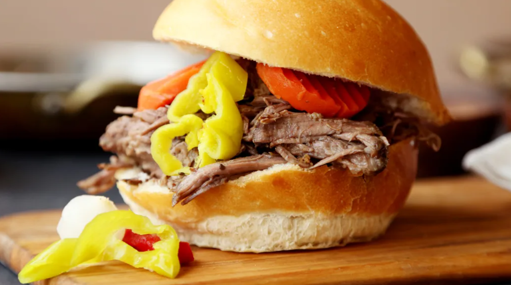

Pasteles en Hoja

Description
Savory blend of herbs and spices make this roast delicious.
Ingredients
1 (3 lb) boneless beef chuck roast
1 (14 1/2 ounce) can beef broth
2 tablespoons dried basil
1 tablespoon dried oregano
1 tablespoon dried onion
1 1⁄2 tablespoons salt
1 1⁄4 tablespoons garlic powder
1⁄2 tablespoon red pepper flakes
2-3 bay leaves
1⁄4 teaspoon pepper
6 ciabatta or 6 sandwich buns
pepperoncini pepper (for garnish) (optional)
Steps
Place chuck roast in a slow cooker.
Combine beef broth, basil, oregano, onion, salt, garlic powder, red pepper flakes, bay leaves and pepper.
Pour over roast.
Cook on low 8 to 9 hours.
Serve as a roast, or slice or shred meat and serve with rolls for sandwiches.
Garnish with pepperoncini if desired.